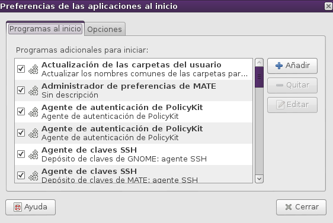

Sesiones
De Huayra
Cada usuario tiene su propia sesión a la que accede con un usuario y contraseña. Cada sesión, puede verse distinta gracias a los cambios que se realice en su configuración, por ejemplo, tener su propio fondo de pantalla, sus propios archivos, o en un nivel más avanzado de uso, que se inicien ciertos programas automáticamente.
Contenido |
[editar] ¿Qué es una sesión?
Una sesión es el periodo de tiempo que pasás usando Huayra, entre el inicio y la salida de la misma. Durante una sesión, podés usar tus aplicaciones, imprimir, navegar por la web, entre otras cosas.
[editar] ¿Cómo ajustar programas para que se inicien automáticamente al iniciar sesión?
Si ya sabes cuáles son los programas que usas con frecuencia, en vez de iniciar uno cada vez, podés hacer que se inicien automáticamente cuando inicies sesión. Por ejemplo, podés hacer que arranque un navegador web tan pronto como inicies sesión. Los programas que se inician automáticamente al iniciar la sesión se llaman Programas al inicio. Estos se configuran haciendo clic en el Icono de en el /Sistema/Preferencias, "Aplicaciones al inicio". Los programas al inicio se guardan y cierran automáticamente por el gestor de sesiones cuando se sale de la sesión, y se reinician cuando inicia sesión. La herramienta de preferencia Sesiones contiene dos solapas, la solapa Programas al inicio y la solapa Opciones. 
{kind=link}
[editar] Solapa Programas al inicio
Podés usar la solapa Programas al inicio para añadir, modificar y quitar programas quese ejecuten al inicio. En esta solapa vas a ver una lista de programas con una descripción corta de cada uno, junto con una casilla de verificación que muestra si el programa al inicio está activado o no. Por lo tanto, los programas no activados no se iniciarán automáticamente cuando inicie sesión.
[editar] Activar y desactivar programas al inicio
Para activar un programa al inicio para que se inicie automáticamente seleccioná la casilla de verificación que corresponde al programa. Para desactivar un programa y que no se inicie automáticamente, deseleccioná la casilla de verificación.
[editar] Añadir un programa al inicio nuevo
Para añadir un programa al inicio nuevo:
- Hacé clic en Añadir. Esto abrirá el diálogo Añadir programa al inicio.
- Usá la caja de texto Nombre para especificar un nombre para el programa al inicio nuevo.
- Usá la caja de texto Comando para especificar el comando con el que se invocará a la aplicación. Por ejemplo, el comando caja iniciará el Editor de textos. Para más ayuda sobre comandos y aplicaciones podés ir a: .
- Ingresá una descripción para la aplicación en la caja de texto Comentarios. Esta descripción del programa va a aparecer en la lista de programas al inicio.
- Hacé clic en Añadir. La aplicación se añadirá a la lista de programas al inicio con su casilla de verificación marcada (activada).
[editar] Quitar un programa al inicio
Para quitar un programa al inicio selecciónelo de la lista de programas al inicio y hacé clic en .
[editar] Editar un programa al inicio
Para editar un programa al inicio existente seleccionalo de la lista de programas al inicio y hacé clic en . Aparecerá un cuadro de diálogo que te permitirá editar las propiedades del programa. Para saber más acerca de las opciones disponibles en este programa consultá la .
[editar] Solapa Opciones de sesión
{kind=link}
El gestor de sesiones puede recordar qué aplicaciones se estaban ejecutando cuando salió de la sesión y reiniciarlas automáticamente cuando inicia sesión de nuevo. Si querés que esto suceda cada vez que cierra la sesión, seleccioná Recordar automáticamente las aplicaciones en ejecución al salir de la sesión. Si querés que esto sólo pase una vez, hacé clic en Recordar las aplicaciones ejecutándose actualmente antes de cerrar la sesión.
[editar] ¿Bloquear la pantalla?
Bloquear la pantalla permite que dejes tu equipo desatendido porque impide que otros accedan a tu información y aplicaciones. Mientras tu pantalla está bloqueada se ejecuta el . Si queres bloquear la pantalla seguí estos pasos:
- Andá a /Sistema/Bloquear pantalla.
- Hacé clic en el botón Bloquear la pantalla.
Para desbloquear la pantalla mové el mouse o hacé clic en cualquier tecla, ingresá tu contraseña y pone <keycap>Intro</keycap>. Si otro usuario quiere usar el equipo mientras está bloqueado, simplemente con mover el mouse o pulsar alguna tecla, puede seleccionar Cambiar de usuario. Allí, se mostrará la pantalla de inicio de sesión y el usuario podrá iniciar sesión con su propia cuenta. No te preocupes, no podrán acceder a ninguna de tus aplicaciones o información. Cuando finalicen su sesión, la pantalla se bloqueará de nuevo y así vos podrás volver a acceder desbloqueando la pantalla nuevamente.
[editar] ¿Cómo termino una sesión?
Cuando hayas terminado de usar el equipo, podés elegir hacer una de las siguientes opciones:
- Terminar la sesión, dejando el equipo listo para que otro usuario comience a trabajar con él. Para esto, elegí <xref linkend="chap:menuhuayra" />/Sistema/Cerrar la sesión de... .
{kind=link}
- Apagar el equipo y con eso, cortar la corriente. Para apagar hacé clic en el ícono de apagado en el Panel Superior a la derecha.
{kind=link}
- También podés Hibernar tu equipo.
Si bien ambas conservan tus archivos y las aplicaciones abiertas, Hibernar, apagará el equipo mientras que Suspender, dejará el equipo en ejecución en un estado que usa menos energía.
- Durante la hibernación, se usa menos energía, pero el estado de tu equipo se preserva: todas las aplicaciones que tengas ejecutándose y los documentos abiertos.
Podés volver desde una hiberanción simplemente moviendo el mouse o pulsando una tecla.